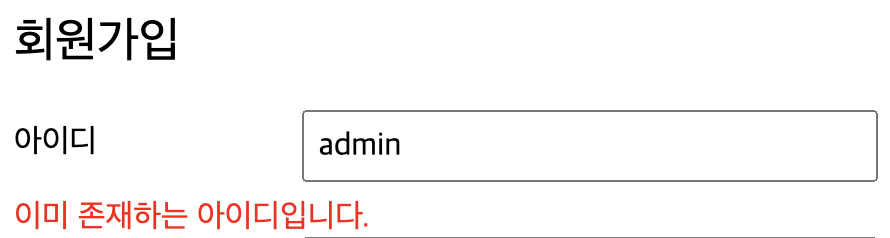
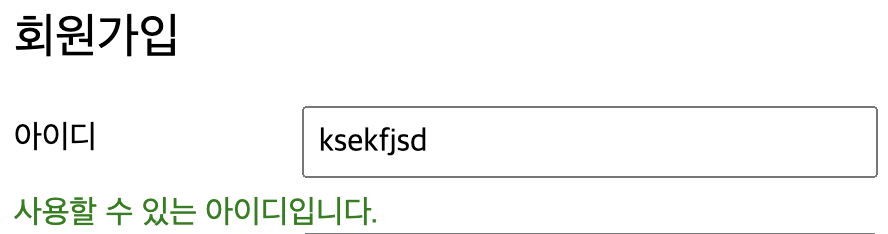
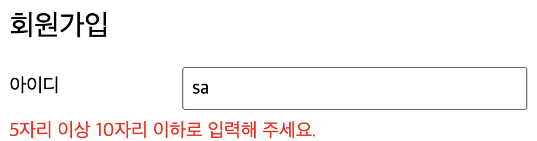
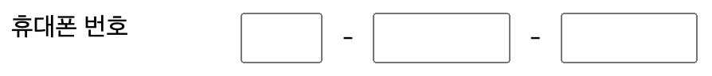

프로젝트) Cafe(웹 사이트) 만들기 4 - 회원가입 유효성 검사하기
개발환경
- OpenJDK 8
- Eclipse 2021-12
- tomcat 8.5
- MySQL Workbench 8.0.19
시작
- 2022.3.4 ~
주제
- 웹 백엔드 수업 중 중간 과제로 개인 프로젝트를 진행하게 되었다.
- 회원가입/로그인/탈퇴 등 기본적인 회원관리 시스템을 가진 웹 사이트를 만드는 것이다. 주어진 기한은
한 달 - 나는
다음 카페를 소규모로 만들어 보기로 했다. 평소 자주 이용하기도 했고 과제의 평가 기준에서 요구하는 기능들을 다 담고 있기도 했기 때문에 이번 기회에 구현해 보면 그동안 배운 것들을 활용하기에 좋을 거 같았다. - 평가 기준에 사이트의 디자인 구현(HTML/CSS 등 프론트엔드)은 포함되지 않기 때문에 본인이 쓰고 싶은 HTML/CSS 템플릿을 구한 뒤 회원 관리 기능을 구현하면 된다.
진행상황 1
- 오늘은 저번에 구현한 기본적인 회원가입 틀에서 사용자가 입력한 정보의 유효성을 검사하는 코드를 추가했다.
Ajax를 이용해 비동기방식으로 사용자가 입력한 아이디의 중복체크를 하려 했는데 학원 선생님이 워낙 짧게 알려주고 수업 시간이 다 끝나버린 데다 나도 웹 개발은 처음이라 당초 예상과 다르게 아이디 유효성 체크를 구현하는 데에 오랜 시간이 소요되었다.- 그래도 숱한 구글링 끝에 아이디 중복체크 부분은 내가 원하는대로 구현이 되었다!
- 내가 모티브로 잡고 구현했던 기능은
네이버 회원가입 페이지의 아이디 중복검사기능이다.
1. 회원가입 페이지에 아이디 중복여부를 알려주는 문구 추가
- join.jsp
<jsp:include page="../inc/top.jsp"></jsp:include>
<!-- jQuery 라이브러리 로드 부분은 top.jsp에 있음 -->
<script src="${pageContext.request.contextPath}/js/join.js"></script>
...
중간 생략
<div class="formRow">
<label for="MOD_TEXTFORM_NameField">아이디 </label><input type="text" name="id" id="id" placeholder="5~10자 이내의 영문+숫자만 입력하세요.">
</div>
<div id="idMsg"></div>
jQuery를 이용해서<div id="idMsg"></div>태그에 중복인지 아닌지 알려주는 메세지를 삽입할 것이다.
2. MemeberDAO에서 DB에 아이디 존재여부를 확인하는 함수 작성
- MemberDAO.java
// isExist(id)
public boolean isExist(String id)
{
System.out.println("DAO : isExist() 호출");
try
{
// 1. 2. DB 연결
con = getCon();
// 3. sql 작성 & pstmt 연결
sql = "select id from cafe_members where id=?";
pstmt = con.prepareStatement(sql);
pstmt.setString(1, id);
// 4. sql 실행
rs = pstmt.executeQuery();
System.out.println("DAO : 아이디 정보 조회 완료");
if (rs.next()) return true;
else return false;
}
catch (Exception e)
{
e.printStackTrace();
}
finally
{
CloseDB();
}
System.out.println("DAO : isExist(id) 끝!!!");
return true;
}
// isExist(id)
- 매개변수로 받은 아이디를 이용해 DB에서 조회한 후 해당 아이디가 존재한다면
true를, 존재하지 않으면false를 리턴하도록 했다. - 매개변수로 받은 아이디가 존재하지 않을 때에만(
return false) 모든 정보를 입력했을 때에 회원가입 프로세스가 진행되도록 할 것이기 때문에 기본 리턴값은true로 설정했다.
3. 서블릿 만들어서 중복체크 확인하는 동작 수행
- IdCheck.java
@WebServlet("/idCheck.me")
public class IdCheck extends HttpServlet
{
protected void doProcess(HttpServletRequest req, HttpServletResponse resp) throws ServletException, IOException
{
req.setCharacterEncoding("UTF-8");
resp.setContentType("text/html; charset=utf-8");
MemberDAO dao = new MemberDAO();
PrintWriter out = resp.getWriter();
boolean result = dao.isExist(req.getParameter("id"));
if (result)
{
out.print("false");
}
else
{
out.print("true");
}
out.close();
}
@Override
protected void doGet(HttpServletRequest req, HttpServletResponse resp) throws ServletException, IOException
{
doProcess(req, resp);
}
@Override
protected void doPost(HttpServletRequest req, HttpServletResponse resp) throws ServletException, IOException
{
doProcess(req, resp);
}
}
- 처음엔
jsp페이지를 만들어서 아주 간단하게 만들었는데 생각보다 잘 안 되서 구글링 후 서블릿으로 만들었다. PrintWriter를 이용해 출력 스트림을 만들어 DB 검색 결과를 보내도록 했다. 검색 결과가 있다면 중복되는 아이디가 있어서 사용할 수 없는 아이디니까false, 없다면 중복되는 아이디가 없어서 사용 가능한 아이디니까true- 이 부분을 구현하면서 출력 스트림에 대해 다시 공부하게 되어서 좋았다! 역시 그냥 배우는 것 보다는 직접 써 봐야 머리에 잘 들어온다.
4. jQuery로 아이디 중복체크 하는 함수 구현
- join.js
$(document).ready(function(){
var $idCheck = idCheck();
});
function idCheck()
{
console.log("idCheck() 호출");
var ret;
$('#id').blur(function(){
$.ajax({
type: 'POST',
async: false,
url: './idCheck.me',
data: {
'id': $('#id').val()
},
dataType: 'text',
success: function(data) {
if (data === 'true')
{
var userId = $('#id').val();
if (5 > userId.length || 10 < userId.length)
{
$id = false;
$('#idMsg').text('5자리 이상 10자리 이하로 입력해 주세요.');
$('#idMsg').css('color', 'red');
}
else
{
ret = true;
$('#idMsg').text('사용할 수 있는 아이디입니다.');
$('#idMsg').css('color', 'green');
}
}
else
{
ret = false;
$('#idMsg').text('이미 존재하는 아이디입니다.');
$('#idMsg').css('color', 'red');
}
},
error: function(data) {
console.log('error');
}
});
});
return ret;
}
IdCheck에서 출력 스트림으로 받은 결과값을 이용해 아이디 입력란 하단에 출력할 메세지를 결정하는데 리턴값이false라면 사용불가 메세지를 바로 출력하면 되지만true인 경우에 사용가능 메세지를 바로 출력하니까 아이디를 입력하지 않고 입력란 바깥을 클릭했을 때에도 사용가능한 아이디라는 메세지가 출력되었다. 아이디를 입력하지 않았을 때에도 DB에서 검색되지 않을 테니까 최종적으로 사용이 가능하다는 파라미터가 리턴될 것이다.- 그래서 리턴값이
true인 경우에는 아이디 입력란에 입력되어 있는 문자열의 길이를 검사한 후 그에 따라 분기를 나누었다. - 여기까지 해서
네이버 회원가입 페이지의 아이디 중복검사 기능과 같게 구현했다! 뿌듯뿌듯 ☺️




진행상황 2

- 휴대폰 번호 입력받는 부분을 세 칸으로 나누었기 때문에 각 필드마다 정해진 자리수만큼 입력하면 다음 칸으로 자동으로 커서가 넘어가도록 하는 부분을 구현했다.
1. 사용자에게서 휴대폰 번호 입력받는 부분 수정
- join.jsp
<div class="formRow">
<label for="MOD_TEXTFORM_TelField">휴대폰 번호 </label>
<label class="phone">
<input id="phone1" type="tel" name="phone1" size="1" maxlength="3" oninput="tabCursor(1)"> -
<input id="phone2" type="tel" name="phone2" size="3" maxlength="4" oninput="tabCursor(2)"> -
<input id="phone3" type="tel" name="phone3" size="3" maxlength="4">
</label>
</div>
2. javascript로 커서 이동하는 함수 구현
- join.js
// 휴대폰 번호 필드 1, 2번 칸에서 지정된 숫자만큼 입력하면 다음 칸으로 커서 넘기는 함수
function tabCursor(_section)
{
var ph = 0;
switch (_section)
{
case 1:
ph = document.join.phone1.value.length;
if (3 === ph)
join.phone2.focus();
break;
case 2:
ph = document.join.phone2.value.length;
if (4 === ph)
join.phone3.focus();
break;
}
}
- 처음에 내 뜻대로 구현되지 않을 때에는 머리를 많이 쥐어뜯었지만 구현을 완료하고 나니까 참 뿌듯하다 😄
마감까지
D-26